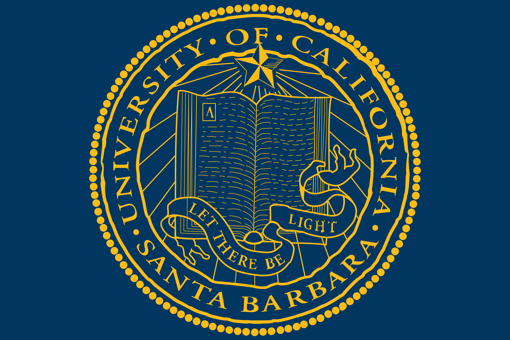
x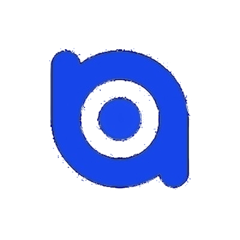
UCSB x BlueAlpha AIPrior Sensitivity Analysis Framework for Bayesian Marketing Mix Models (MMM)
Google Meridian MMM - Prior Robustness Diagnostics
Run Scope
The listed target channels were perturbed together in each run (linked prior changes). The report then measures ROI response for all modeled channels under those shared target priors.
Introduction
Marketing Mix Models (MMM) are widely used by companies to evaluate the effectiveness of marketing channels and guide budget allocation decisions. Recent Bayesian MMM frameworks, such as Google Meridian, allow analysts to incorporate prior information into model estimation.
However, Bayesian models can be sensitive to prior assumptions. Small changes in prior parameters may lead to large differences in estimated ROI for marketing channels. Understanding this sensitivity is critical for building reliable MMM models.
This project proposes a systematic prior sensitivity analysis framework that evaluates how ROI estimates change across different prior configurations. The framework generates automated diagnostic reports that help analysts identify unstable parameters and improve model robustness.
Executive Summary
- liveintent ROI prior (Normal): max |% change| -> 1363.32% change in estimated ROI
- amazon ROI prior (Normal): max |% change| -> 738.85% change in estimated ROI
- google ROI prior (Normal): max |% change| -> 665.83% change in estimated ROI
| Rank | Channel | Distribution | Baseline ROI | Max |% Change| |
|---|---|---|---|---|
| 1 | liveintent | Normal | -0.0354 | 1363.32% |
| 2 | amazon | Normal | 0.0366 | 738.85% |
| 3 | Normal | 0.0122 | 665.83% | |
| 4 | LogNormal | 0.0122 | 629.42% | |
| 5 | snapchat | Normal | -0.0085 | 608.71% |
| 6 | snapchat | LogNormal | -0.0085 | 482.38% |
| 7 | liveintent | LogNormal | -0.0354 | 425.69% |
| 8 | amazon | LogNormal | 0.0366 | 325.21% |
| 9 | meta | Normal | 0.0284 | 247.74% |
| 10 | meta | LogNormal | 0.0284 | 244.05% |
Interpretation note: very small baseline ROI can inflate percent changes; use ranking as directional sensitivity signal.
- High sensitivity detected (>= 15.0%): prioritize better priors/experiments for liveintent (Normal).
- Multiple moderately sensitive channels (>= 7.5%): consider narrowing prior ranges or adding holdout validation.
Decision Card
Directional only; resolve QC or stability risks before budget-level decisions.
Traffic-Light Policy v1 (pre-robustness score)
Triggered Rules
- YELLOW rule: diagnostics FAIL runs (2) exceed green limit (0).
- YELLOW rule: top sensitivity 1363.3% reaches high threshold 15.0%.
Why This Tier
- Broad exploration diagnostics: PASS 61.1%, REVIEW 5, FAIL 2.
- QC gate window: 4 run(s), PASS 4, REVIEW 0, FAIL 0.
- Most sensitive channel-prior pair: liveintent (Normal), max |% change|=1363.3% (medium>=7.5%, high>=15.0%).
Next Actions
- Keep conclusions directional; avoid hard budget shifts from single-run snapshots.
- Prioritize reruns around the most sensitive channel-prior combinations.
- Require QC gate PASS plus robustness score before production decision workflow.
Spend vs Effect Alignment
Selected run: multi|google,meta,tiktok|0.103795|0.006689|Normal|alpha=0p3|ec=0p5|slope=1p2|lag=4|decay=geometric
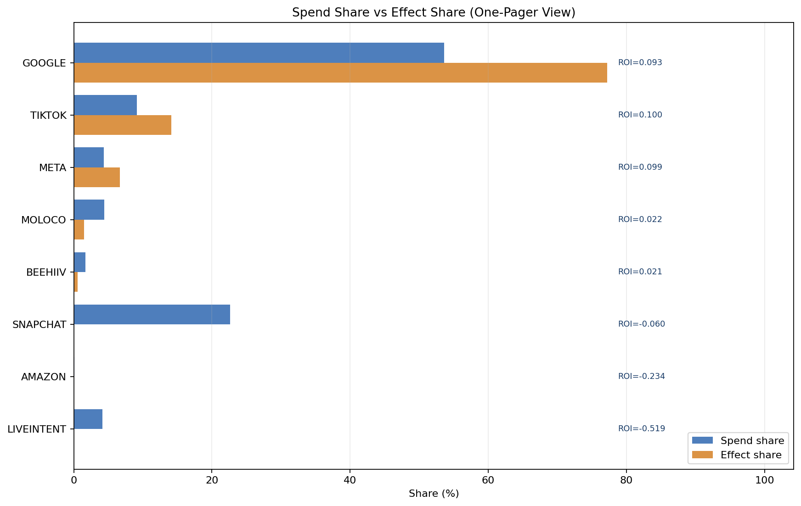
Largest allocation gap: GOOGLE (effect - spend = 23.6 pp).
| Channel | Spend Share | Effect Share | Gap (pp) | ROI |
|---|---|---|---|---|
| 53.6% | 77.2% | +23.6 pp | 0.0934 | |
| TIKTOK | 9.1% | 14.1% | +5.0 pp | 0.1003 |
| META | 4.4% | 6.7% | +2.3 pp | 0.0988 |
| MOLOCO | 4.4% | 1.5% | -2.9 pp | 0.0218 |
| BEEHIIV | 1.7% | 0.5% | -1.2 pp | 0.0208 |
| SNAPCHAT | 22.6% | 0.0% | -22.6 pp | -0.0601 |
| LIVEINTENT | 4.2% | 0.0% | -4.2 pp | -0.5187 |
| AMAZON | 0.1% | 0.0% | -0.1 pp | -0.2340 |
Note: 3 channel(s) had negative modeled effect in this run; effect-share uses non-negative contribution mass for comparability.
ROI Tornado Summary
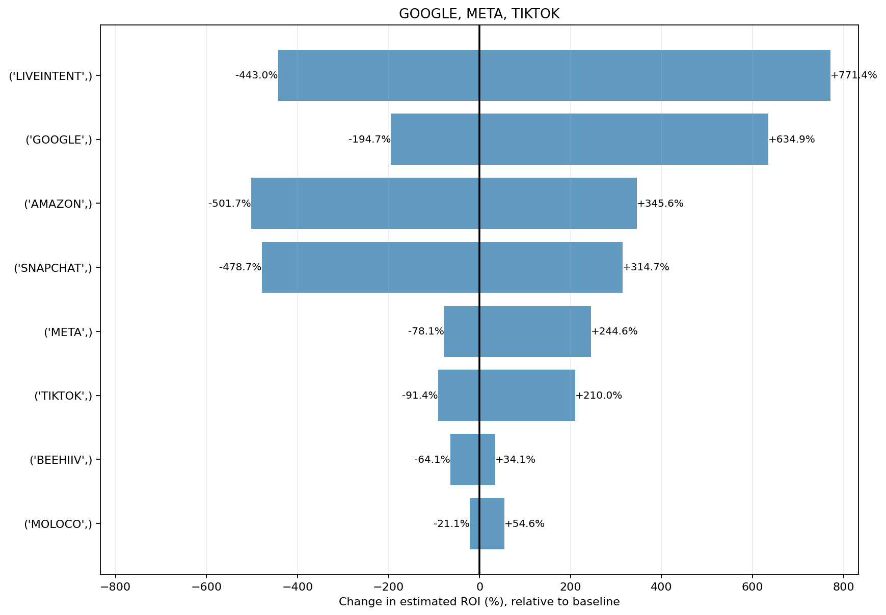
Structural Sensitivity (Adstock + Saturation)
Selected reference run: multi|google,meta,tiktok|0.103795|0.006689|Normal|alpha=0p3|ec=0p5|slope=1p2|lag=4|decay=geometr... | profile=alpha=0.3000|ec=0.5000|slope=1.2000|lag=4.0000|decay=geometric
Structural parameters are fixed in this experiment; detailed structural tables are hidden in concise mode.
Active profile: alpha=0.300, ec=0.500, slope=1.200, lag=4, decay=geometric.
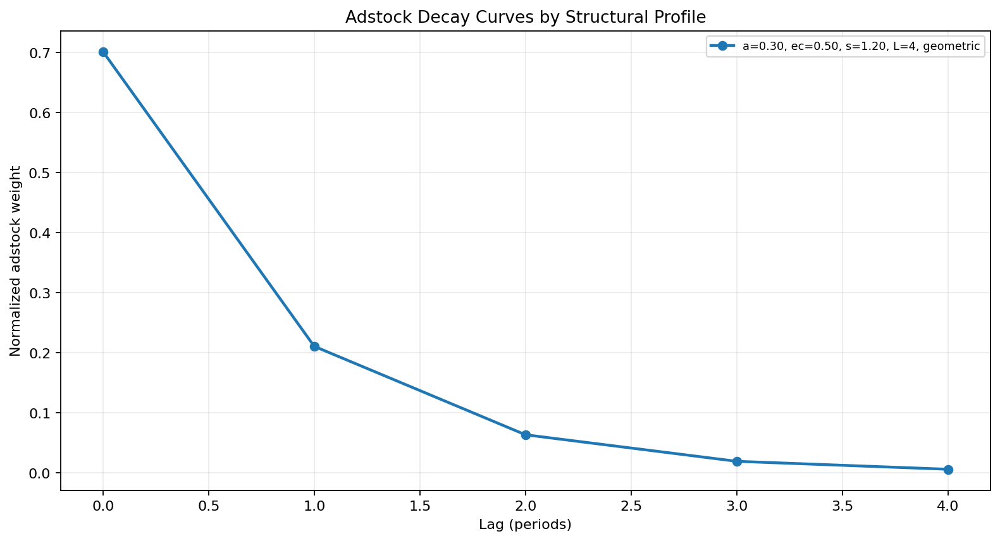
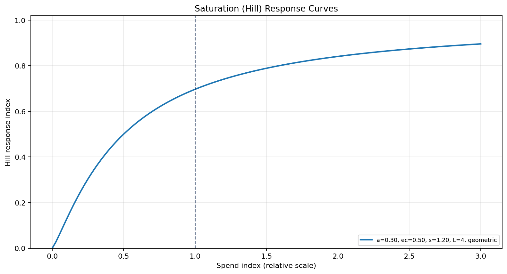
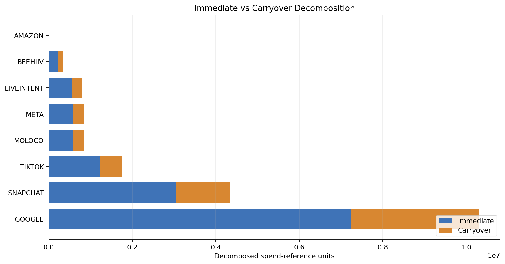
Dollar Sensitivity Summary
Range mode: p05p95 | Dollars per subscription: 100.00
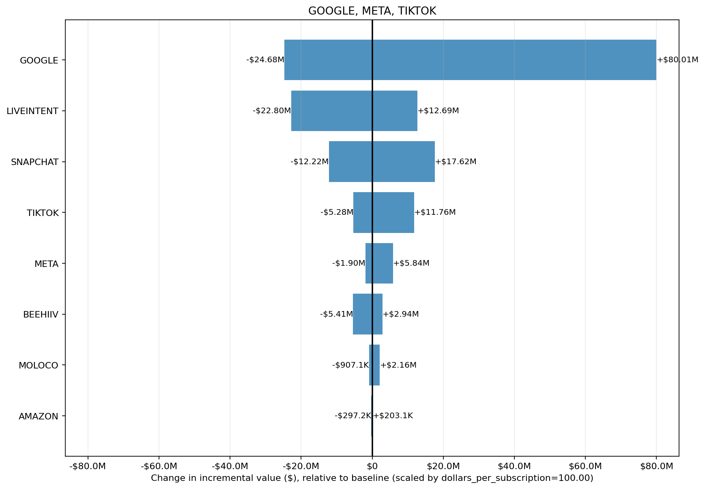
src.viz.tornado_plots: one bar per channel with downside/upside dollar range.- google: downside=-$24.68M, upside=$80.01M, max |$ change|=$80.01M
- liveintent: downside=-$22.80M, upside=$12.69M, max |$ change|=$22.80M
- snapchat: downside=-$12.22M, upside=$17.62M, max |$ change|=$17.62M
| Rank | Channel | Downside ($) | Upside ($) | Max |$ Change| | Median Delta ($) |
|---|---|---|---|---|---|
| 1 | -$24.68M | $80.01M | $80.01M | $3.18M | |
| 2 | liveintent | -$22.80M | $12.69M | $22.80M | $9.51M |
| 3 | snapchat | -$12.22M | $17.62M | $17.62M | $13.76M |
| 4 | tiktok | -$5.28M | $11.76M | $11.76M | -$151.2K |
| 5 | meta | -$1.90M | $5.84M | $5.84M | -$505.3K |
| 6 | beehiiv | -$5.41M | $2.94M | $5.41M | -$2.23M |
| 7 | moloco | -$907.1K | $2.16M | $2.16M | $1.44M |
| 8 | amazon | -$297.2K | $203.1K | $297.2K | $142.9K |
Single Scenario Snapshot
Selected non-fail scenario with largest total absolute ROI % change across channels.
run_id=multi|google,meta,tiktok|0.103795|0.006689|Normal|alpha=0p3|ec=0p5|slope=1p2|lag=4|decay=geometric | mu=0.103795 | sigma=0.006689 | dist=Normal | channels shown=8
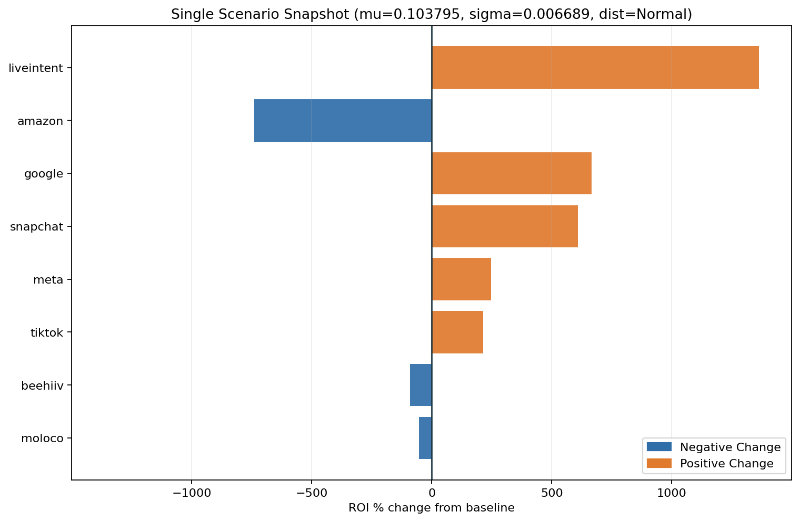
| Channel | ROI (Selected Run) | ROI (Baseline) | ROI % Change | Delta Value |
|---|---|---|---|---|
| liveintent | -0.5187 | -0.0354 | 1363.32% | -$38.56M |
| amazon | -0.2340 | 0.0366 | -738.85% | -$425.9K |
| 0.0934 | 0.0122 | 665.83% | $83.67M | |
| snapchat | -0.0601 | -0.0085 | 608.71% | -$22.40M |
| meta | 0.0988 | 0.0284 | 247.74% | $5.91M |
| tiktok | 0.1003 | 0.0319 | 214.33% | $11.99M |
| beehiiv | 0.0208 | 0.2511 | -91.72% | -$7.56M |
| moloco | 0.0218 | 0.0469 | -53.59% | -$2.12M |
run_id=multi|google,meta,tiktok|0.103795|0.006689|LogNormal|alpha=0p3|ec=0p5|slope=1p2|lag=4|decay=geometric | mu=0.103795 | sigma=0.006689 | dist=LogNormal | channels shown=8
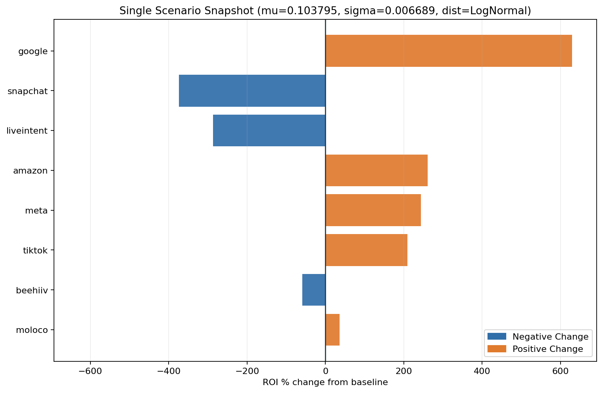
| Channel | ROI (Selected Run) | ROI (Baseline) | ROI % Change | Delta Value |
|---|---|---|---|---|
| 0.0890 | 0.0258 | 629.42% | $79.10M | |
| snapchat | 0.0232 | 0.0293 | -373.99% | $13.76M |
| liveintent | 0.0664 | 0.0922 | -287.25% | $8.13M |
| amazon | 0.1321 | 0.1322 | 260.84% | $150.4K |
| meta | 0.0977 | 0.0336 | 244.05% | $5.82M |
| tiktok | 0.0987 | 0.0365 | 209.24% | $11.71M |
| beehiiv | 0.1024 | 0.1640 | -59.20% | -$4.88M |
| moloco | 0.0640 | 0.0703 | 36.44% | $1.44M |
run_id=multi|google,meta,tiktok|0.103795|0.016722|Normal|alpha=0p3|ec=0p5|slope=1p2|lag=4|decay=geometric | mu=0.103795 | sigma=0.016722 | dist=Normal | channels shown=8
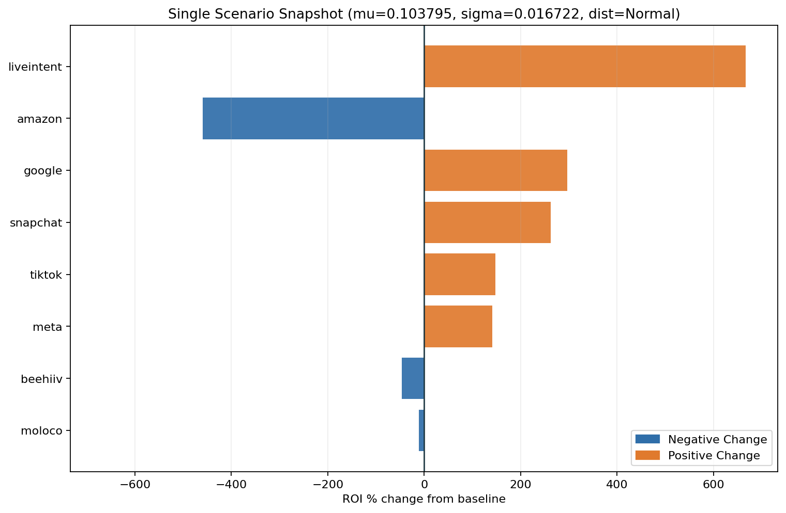
| Channel | ROI (Selected Run) | ROI (Baseline) | ROI % Change | Delta Value |
|---|---|---|---|---|
| liveintent | -0.2718 | -0.0354 | 666.90% | -$18.86M |
| amazon | -0.1318 | 0.0366 | -459.85% | -$265.1K |
| 0.0484 | 0.0122 | 296.62% | $37.27M | |
| snapchat | -0.0307 | -0.0085 | 262.77% | -$9.67M |
| tiktok | 0.0791 | 0.0319 | 147.89% | $8.27M |
| meta | 0.0686 | 0.0284 | 141.44% | $3.38M |
| beehiiv | 0.1339 | 0.2511 | -46.68% | -$3.85M |
| moloco | 0.0416 | 0.0469 | -11.23% | -$443.5K |
run_id=multi|google,meta,tiktok|0.103795|0.016722|LogNormal|alpha=0p3|ec=0p5|slope=1p2|lag=4|decay=geometric | mu=0.103795 | sigma=0.016722 | dist=LogNormal | channels shown=8
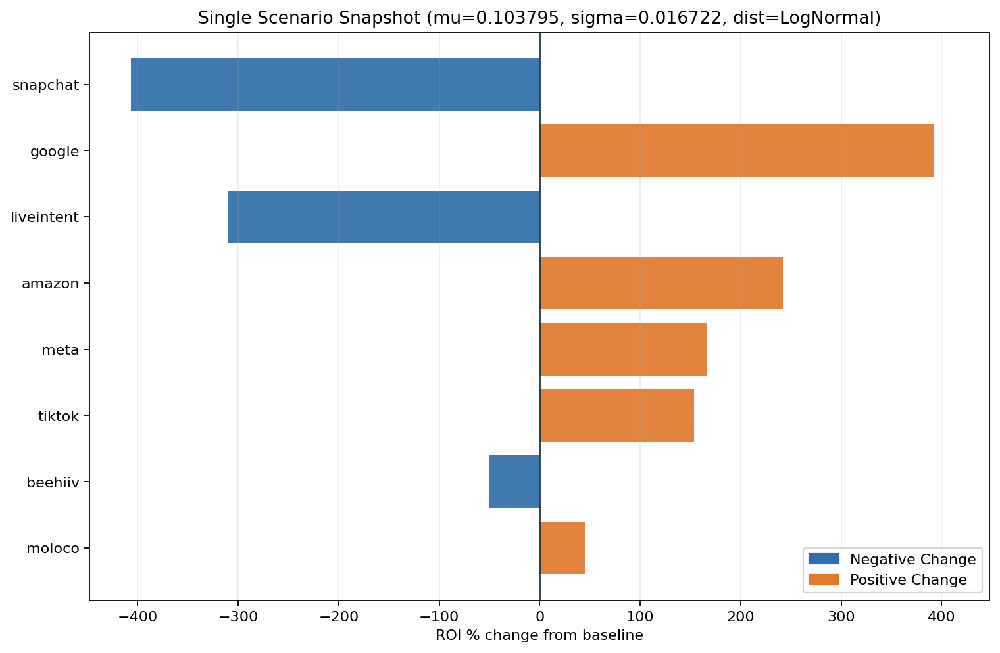
| Channel | ROI (Selected Run) | ROI (Baseline) | ROI % Change | Delta Value |
|---|---|---|---|---|
| snapchat | 0.0260 | 0.0293 | -406.97% | $14.98M |
| 0.0601 | 0.0258 | 392.13% | $49.28M | |
| liveintent | 0.0744 | 0.0922 | -309.95% | $8.77M |
| amazon | 0.1251 | 0.1322 | 241.66% | $139.3K |
| meta | 0.0756 | 0.0336 | 166.11% | $3.96M |
| tiktok | 0.0809 | 0.0365 | 153.57% | $8.59M |
| beehiiv | 0.1240 | 0.1640 | -50.60% | -$4.17M |
| moloco | 0.0680 | 0.0703 | 45.04% | $1.78M |
run_id=multi|google,meta,tiktok|0.020759|0.033445|Normal|alpha=0p3|ec=0p5|slope=1p2|lag=4|decay=geometric | mu=0.020759 | sigma=0.033445 | dist=Normal | channels shown=8
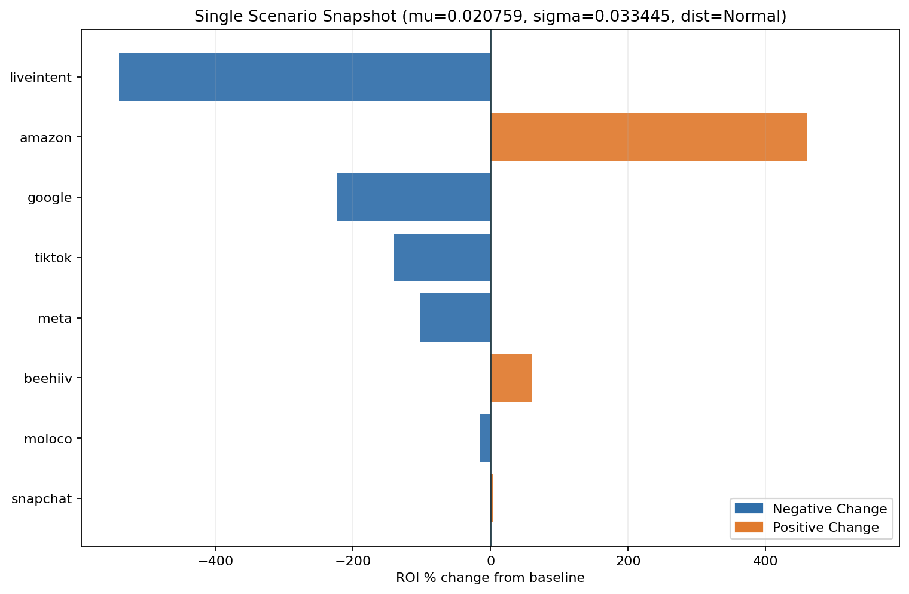
| Channel | ROI (Selected Run) | ROI (Baseline) | ROI % Change | Delta Value |
|---|---|---|---|---|
| liveintent | 0.1563 | -0.0354 | -540.88% | $15.30M |
| amazon | 0.2054 | 0.0366 | 460.85% | $265.6K |
| -0.0151 | 0.0122 | -224.01% | -$28.15M | |
| tiktok | -0.0132 | 0.0319 | -141.36% | -$7.91M |
| meta | -0.0009 | 0.0284 | -103.24% | -$2.46M |
| beehiiv | 0.4041 | 0.2511 | 60.95% | $5.02M |
| moloco | 0.0397 | 0.0469 | -15.32% | -$604.8K |
| snapchat | -0.0088 | -0.0085 | 4.17% | -$153.4K |
run_id=multi|google,meta,tiktok|0.020759|0.033445|LogNormal|alpha=0p3|ec=0p5|slope=1p2|lag=4|decay=geometric | mu=0.020759 | sigma=0.033445 | dist=LogNormal | channels shown=8
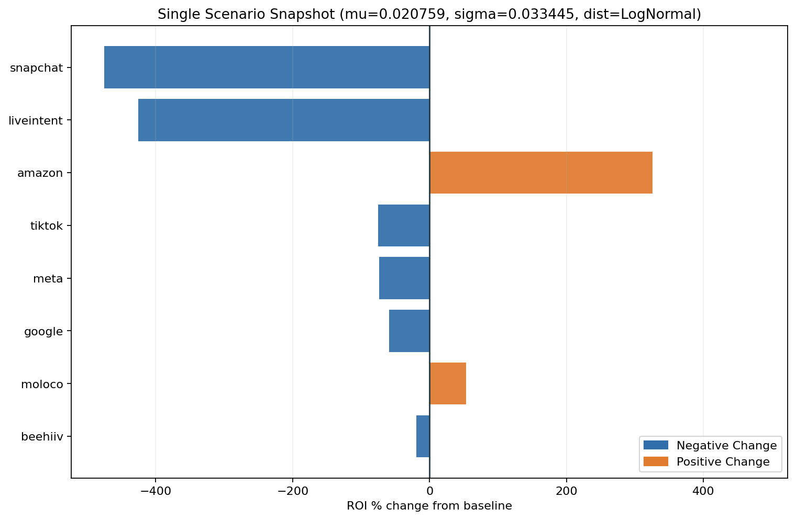
| Channel | ROI (Selected Run) | ROI (Baseline) | ROI % Change | Delta Value |
|---|---|---|---|---|
| snapchat | 0.0318 | 0.0293 | -475.52% | $17.50M |
| liveintent | 0.1155 | 0.0922 | -425.69% | $12.04M |
| amazon | 0.1557 | 0.1322 | 325.21% | $187.5K |
| tiktok | 0.0078 | 0.0365 | -75.57% | -$4.23M |
| meta | 0.0075 | 0.0336 | -73.61% | -$1.76M |
| 0.0050 | 0.0258 | -59.25% | -$7.45M | |
| moloco | 0.0720 | 0.0703 | 53.54% | $2.11M |
| beehiiv | 0.2026 | 0.1640 | -19.30% | -$1.59M |
QC Gate (Strict Window)
QC window: mu in [0.020759, 0.051898], sigma in [0.006689, 0.033445], dist in [Normal].
Outside QC window: PASS 7, REVIEW 5, FAIL 2.
Concise mode: detailed QC scenario tables are hidden. Use qc_gate_level: "full" for full scenario-level diagnostics.
Methods
Baseline: Baseline ROI is defined at the median prior mean (mu) and median prior standard deviation (sigma) within each channel and distribution family.
Sensitivity: For each scenario, percent change is computed relative to that channel-specific baseline ROI. Sensitivity is summarized using maximum absolute percent change across tested prior settings.
Visualization: The report includes spend-vs-effect one-pager alignment, ROI/value tornado views, structural adstock-saturation diagnostics (decay, carryover, saturation curves), a single-run channel snapshot, and 2x2 heatmap boards for sensitive channel-prior combinations.
Heatmap Boards (2x2)
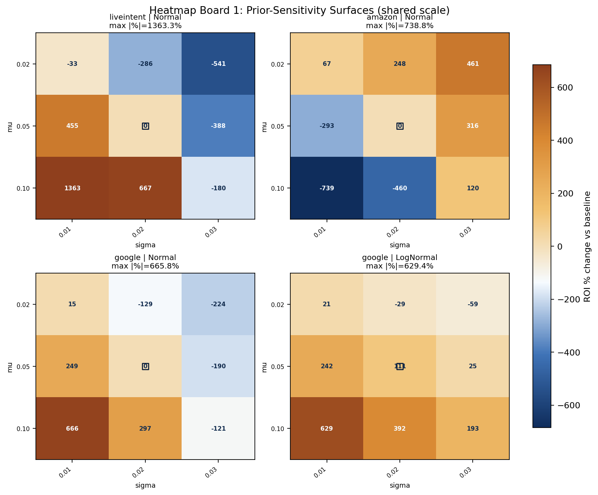